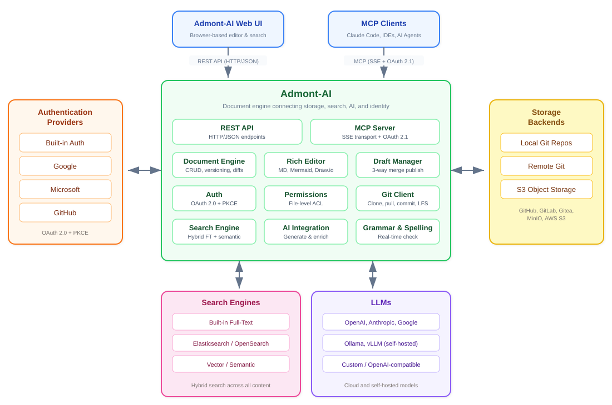

Admont-AI Documentation
Welcome to the official documentation for Admont-AI — a document engine that integrates your content with search engines and large language models.
What is Admont-AI?
Admont-AI sits at the center of your document workflow, connecting four key systems:
- Storage Backends — Git repositories (local, remote, or S3-compatible object storage) for versioning and storing documents, images, diagrams, and other files.
- Search Engines — Pluggable search engines for hybrid search across all your content.
- LLMs — Cloud-hosted and self-hosted language models for generating, summarizing, and enriching documents.
- Authentication Providers — Built-in authentication as well as external identity providers via OAuth 2.0 with PKCE.
Security is at the center of Admont-AI. Authentication follows the latest OAuth 2.0 standard with PKCE, and security is enforced at every level of the system — the Web UI, the MCP server, and down to individual files and folders.

You write documents in Markdown, and Admont-AI handles versioning, search indexing, AI-assisted content generation, collaboration, and access control behind the scenes. Every edit is tracked, every change can be reverted, and multiple people can work on the same knowledge base simultaneously.
Beyond plain markdown, Admont-AI supports visual diagram editing (Mermaid, Draw.io), image annotation, LaTeX math formulas, video embedding, and AI-assisted content generation — all from a single browser-based interface.
Key Features
- Rich Markdown Editor — WYSIWYG editing with live preview, tables, code blocks, math formulas, and embedded media
- Git-Backed Storage — Every document is version-controlled with full commit history, diffs, and restore capability
- Draft Workflow — Edit safely with auto-saving drafts that are published explicitly via three-way merge
- Hybrid Search — Find content using full-text search, semantic (AI-powered) search, or a combination of both
- Multi-Format Support — Edit Markdown, Mermaid diagrams, Draw.io diagrams, LaTeX, images, and plain text files
- AI Assistant — Ask questions, generate new content, or polish existing text using integrated AI models
- File and Folder Permissions — Granular access control with per-user, per-group, and path-level permissions
- MCP Integration — Connect AI assistants like Claude directly to your wiki via the Model Context Protocol
- Drag-and-Drop Organization — Move files and folders visually in the sidebar
Supported Search Engines
- pgvector (PostgreSQL + local ONNX embeddings)
- Elasticsearch 8.x
- Typesense
Supported LLMs
- Anthropic
- OpenAI
- DeepSeek
- Meta
- Mistral
- Ollama (self-hosted)
- Perplexity
- xAI
Supported Authentication Providers
- Apple
- Auth0
- Azure AD v2
- Bitbucket
- Cognito
- Discord
- GitHub
- GitLab
- Microsoft
- Okta
- OpenID Connect
- Slack
Documentation Sections
For Users
| Section | Description |
|---|---|
| Getting Started | Product overview, installation, configuration, and your first steps |
| User Guide | Day-to-day usage: editing documents, drafts, search, file history, media uploads, and the AI assistant |
For Administrators
| Section | Description |
|---|---|
| Administration | Managing users, groups, repositories, and file permissions |
| Security | Authentication flows, authorization model, and MCP authentication |
For Developers
| Section | Description |
|---|---|
| Architecture | System design, backend and frontend internals, search engine, MCP server, and REST API reference |
| Developer Guide | Local development setup, API and MCP integration guides, and contributing guidelines |
Reference
| Section | Description |
|---|---|
| Markdown Intro | A tutorial on writing Markdown with syntax examples and media embedding |
| REST API Reference | Complete endpoint documentation for integrating with Admont-AI |